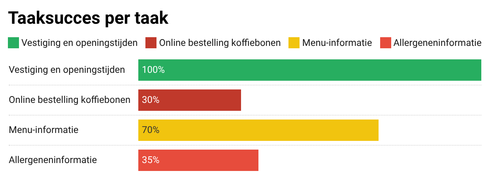
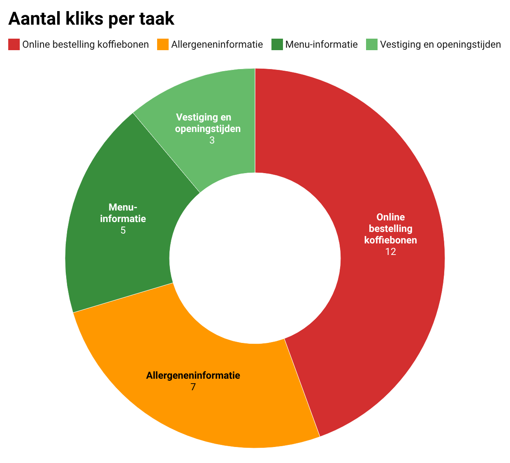
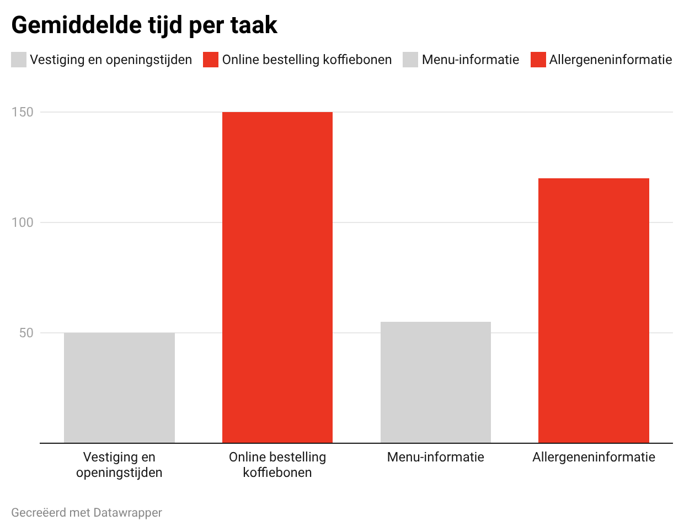
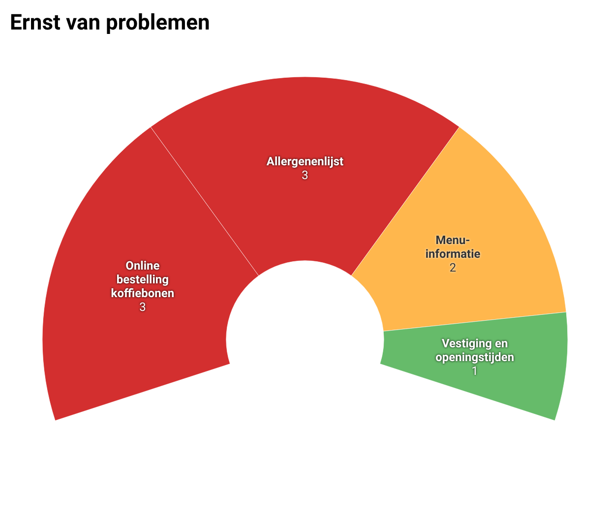

Doppio Espresso – UX Redesign & Usabilitytest
In het kort
Waarom is een zak koffiebonen bestellen zo'n zoektocht?
Tijdens dit project heb ik de mobiele website van Doppio Espresso onderzocht. Uit mijn usabilitytests bleek dat gebruikers vaak vastliepen bij taken die eigenlijk heel simpel zouden moeten zijn, zoals het vinden van allergenen of het bestellen van koffiebonen. Door deze testdata te analyseren, heb ik een redesign gemaakt dat de website gebruiksvriendelijker en commercieel sterker maakt.
Tools

Het probleem
De informatie op de mobiele site was er wel, maar de navigatie zat in de weg. Tijdens mijn onderzoek merkte ik dat mensen gefrustreerd raakten, omdat ze hun doel niet snel konden bereiken.
De grootste knelpunten waren:
- Het lastig kunnen vinden van een fysieke vestiging.
- Menukaarten en allergenenlijsten die als onleesbare PDF's werden getoond.
- De onduidelijke route naar de webshop.


Mijn aanpak
Dit was een individueel project waarbij ik verantwoordelijk was voor het volledige proces. Ik ben begonnen met usabilitytests om te zien waar het in de praktijk misging. Om mijn conclusies sterker te maken, heb ik mijn resultaten gecombineerd met de data van een medestudent. Hierdoor zag ik duidelijke patronen ontstaan, wat een betrouwbare basis gaf voor mijn ontwerpkeuzes.
Ik heb alle feedback geanalyseerd en de problemen geprioriteerd op ernst (laag, middelmatig, hoog), zodat ik wist welke aanpassingen de meeste impact zouden hebben op de klantbeleving.
-

-

-

-

-

Swipe om de resultaten van het onderzoek te bekijken.
Belangrijkste aanpassingen
Ik heb me gefocust op de grootste pijnpunten van de gebruiker.
1. Verzendkosten en levertijd zichtbaar maken hoog

Slechts 1 van de 9 deelnemers vond de verzendkosten. Deze stonden verborgen in de footer.

Ik heb de verzendinformatie van de footer naar de plek onder het product verplaatst, zodat de klant alle info op een plek heeft voor het bestellen. Door de vertraging een rood klokje te geven tussen de groene vinkjes, valt de drukte direct op en leest de klant er niet overheen. Dit voorkomt dat mensen later in de checkout verrast worden en alsnog afhaken.
2. Webshop beter vindbaar maken hoog

De webshop was onvindbaar in het menu, waardoor gebruikers niet doorhadden dat ze ook online konden bestellen.

Ik heb op meerdere plekken (menu, footer en accordions) een opvallende knop toegevoegd, omdat mensen in de tests hier vaak overheen keken. Ik heb de tekst veranderd naar "Onze webshop - bestel voor thuis" in plaats van alleen "Webshop". Dit maakt direct duidelijk dat je de producten van Doppio ook online kunt kopen, wat de drempel om door te klikken een stuk lager maakt.
3. Duidelijkere feedback bij bestellen hoog

Gebruikers merkten vaak niet dat een product was toegevoegd, omdat de feedbackmelding te klein en onopvallend was.

Ik heb een grotere melding ontworpen met contrasterende kleuren en duidelijke knoppen. Hierdoor krijgen gebruikers direct feedback op hun actie. Dit sluit aan bij de heuristiek "zichtbaarheid van de systeemstatus".
4. Allergenenlijst duidelijker maken hoog

De allergenenlijst was een PDF-schema met kleine vakjes. Tijdens de tests zag ik dat gebruikers hierdoor echt vastliepen. Ze moesten steeds inzoomen en van links naar rechts schuiven om te zien welk kruisje bij welk gerecht hoorde, wat ook de kans vergroot op leesfouten die gevaarlijk kunnen zijn.

Ik heb dit schema vervangen door een interactieve pagina met filters en duidelijke iconen. Mijn doel was veiligheid verhogen en snellere vindbaarheid: door simpelweg aan te vinken wat je niet mag eten, krijg je direct een overzicht dat past bij jouw dieet.
5. Mobielvriendelijke menukaart middelmatig

De menukaart werd weergegeven als een PDF. Tijdens de tests merkte ik dat vooral ouderen hier moeite mee hadden. De tekst was veel te klein en ze moesten steeds inzoomen.

Ik heb een interactieve menupagina ontworpen met zoek- en filteropties, zodat ook oudere gebruikers niet meer hoeven in te zoomen om de tekst te kunnen lezen. Mijn gedachte achter de zoek- en filteropties was dat mensen vaak met een specifiek doel kijken. Door deze filters toe te voegen hoeven ze niet meer de hele lijst te scannen, maar vinden ze direct wat ze zoeken. Dit maakt het menu voor iedereen een stuk toegankelijker en sneller in gebruik.
Resultaat & reflectie
Het resultaat is een website die voor iedereen (van jong tot oud) een stuk makkelijker werkt. Door informatie logischer in te delen en onhandige PDF-bestanden te vervangen, kunnen gebruikers nu zonder frustratie vinden wat ze zoeken. Dit zorgt voor een fijner proces en een grotere kans op bestellingen in de webshop.
Wat ik heb geleerd:
- Testen geeft duidelijkheid: Soms vul je zelf in wat logisch is, maar testen laat zien hoe het echt zit. Tijdens de tests zag ik pas dat de PDF-menukaart nog onhandiger was dan ik dacht.
- Niet twijfelen, maar doen: Toen de website van Doppio midden in mijn project veranderde, heb ik geleerd om niet te blijven hangen. Ik zag snel welke delen van mijn onderzoek ik kon houden en wat ik echt moest aanpassen. Hierdoor kon ik zonder tijd te verliezen gelijk door met mijn ontwerp.
- Samen sta je sterker: Door mijn resultaten te combineren met die van een medestudent, wist ik zeker dat mijn conclusies betrouwbaar waren. Dit gaf me een sterke basis voor mijn keuzes.
- Toegankelijkheid is erg belangrijk: Een ontwerp is pas geslaagd als het voor iedereen werkt. Of het nu gaat om een leesbaar menu of een duidelijke melding: de gebruiker moet zich geholpen voelen.